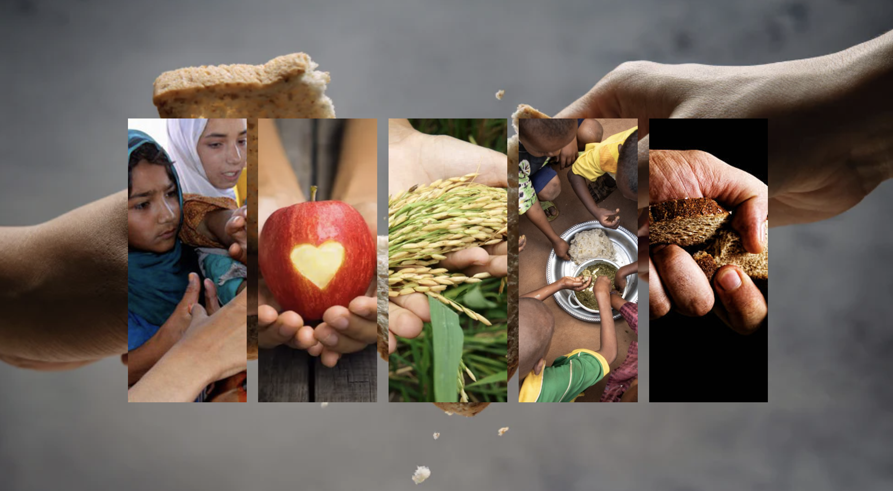
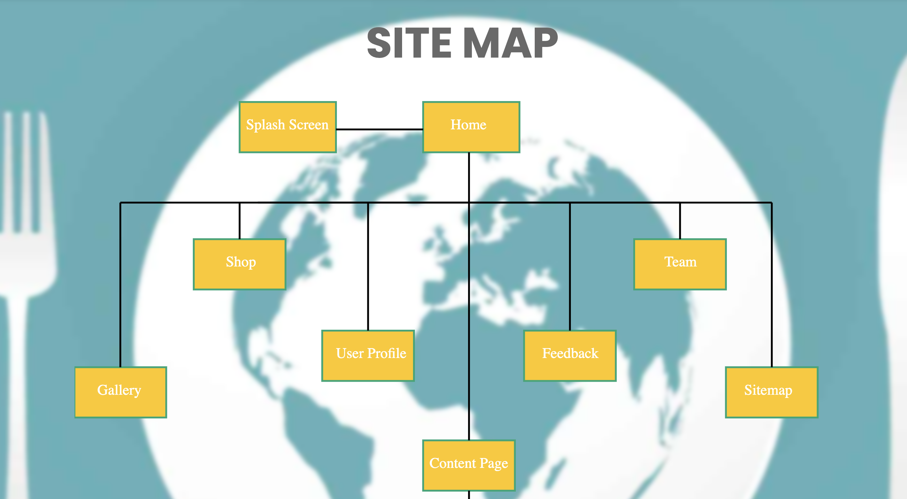

Gallery
We utilized HTML and CSS to design the gallery page on our website. HTML structured the page, while CSS enhanced its appearance with grids, borders, shadows, and hover effects. Each photo was positioned on the page using HTML image components.
Visit GallerySitemap
Our website's sitemap, created with HTML, SVG, and CSS, ensures easy navigation and quick access to information. CSS provides design elements like fonts and colors, while SVG helps organize the layout. We prioritize user-friendly exploration by keeping the design simple and straightforward.
Visit Site MapContent Page

We crafted the content page of our website using HTML and CSS. CSS was responsible for enhancing the page's visual appeal with attractive fonts, colors, and layout adjustments, while HTML supplied the page with headings, text, and images.
Visit Content